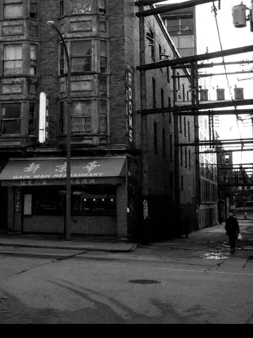

ReleaseNov 8, 2024
Lions' Gate
One cut from L.T. Drifta. Named for the crossing you take when the night isn’t finished.
Lions Gate is the bridge you take when the city’s already decided you’re not done. We named the cut after that, not after a skyline postcard.
One track from L.T. Drifta. Vancouver air you leave on while the water keeps moving underneath you. Quiet delivery, real pressure. First time I heard it I stopped pretending I was finishing an email.
If someone asks what the label sounds like when it isn’t trying, I still send them here.